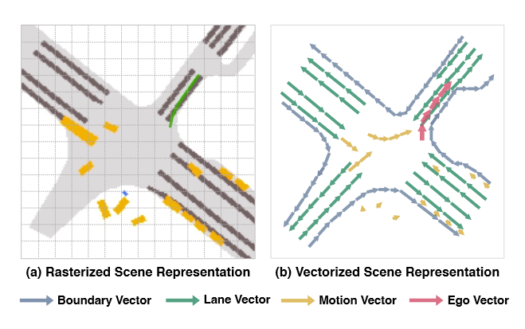
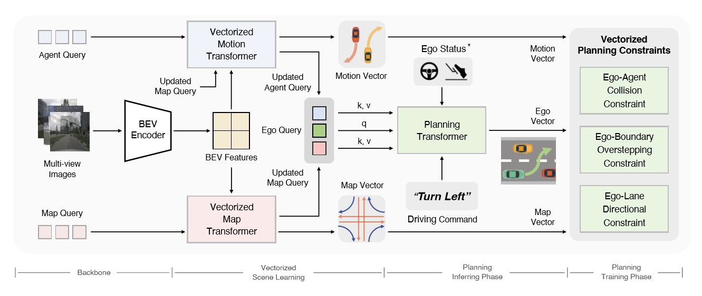
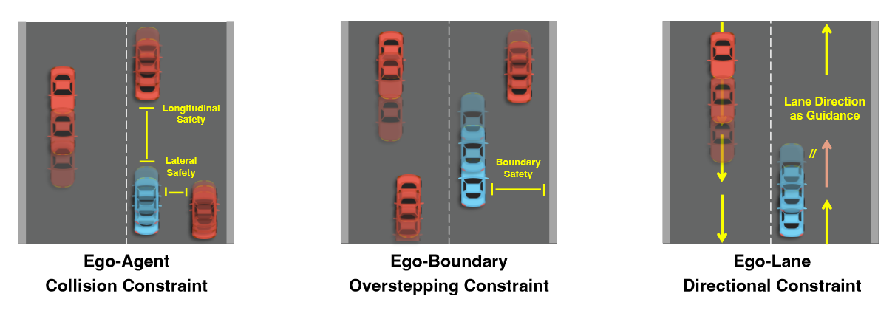
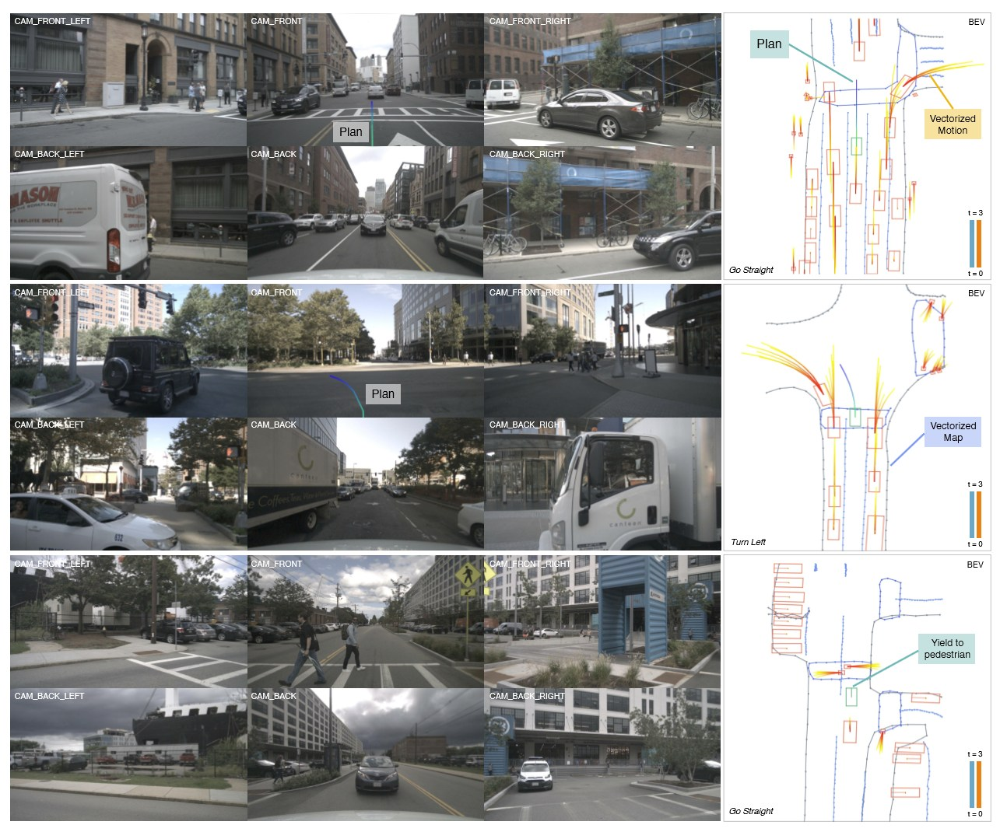

目次
VAD: Vectorized Scene Representation for Efficient Autonomous Driving
Bo Jiang1,*,◇、Shaoyu Chen1,*,◇、Qing Xu2、Bencheng Liao1,◇、Jiajie Chen2、Helong Zhou2、Qian Zhang2、Wenyu Liu1、Chang Huang2、Xinggang Wang1,✉
1 Huazhong University of Science & Technology（華中科技大学）、2 Horizon Robotics
{bjiang, shaoyuchen, bcliao, liuwy, xgwang}@hust.edu.cn
{qing.xu, jiajie.chen, helong.zhou, qian01.zhang, chang.huang}@horizon.ai
https://github.com/hustvl/VAD
arXiv:2303.12077v3 [cs.RO]、2023年8月24日
翻訳について：原文 PDF は
19_VAD_2303.12077.pdf（全 11 ページ）。本文、図の説明、図中ラベル、表、脚注、付録を訳出し、論文タイトルと参考文献は原文のまま掲載。図は原図を掲載し、英語ラベルの日本語訳を併記した。数式・数値・引用番号・コードの識別子は原文を維持。原文の記述に関する補足は「訳注」と明示し、本文と区別している。
脚注：* 同等の貢献。◇ 本研究の実施時に Horizon Robotics のインターン。✉ 責任著者：xgwang@hust.edu.cn
要旨
自動運転では、信頼性の高い軌道計画のために周辺環境を包括的に理解する必要がある。従来の研究は、密なラスタ化シーン表現（例：エージェントの占有や意味地図）に依存して計画を行っており、計算負荷が高く、インスタンスレベルの構造情報が欠落している。本論文では、走行シーンを完全にベクトル化された表現としてモデル化する、自動運転のためのエンドツーエンドのベクトル化パラダイム VAD を提案する。提案するベクトル化パラダイムには 2 つの大きな利点がある。一方で、VAD はベクトル化されたエージェントの動きと地図要素を明示的なインスタンスレベルの計画制約として活用し、計画の安全性を効果的に向上させる。他方で、VAD は計算負荷の高いラスタ化表現と人手で設計された後処理ステップを排除することにより、従来のエンドツーエンド計画手法よりもはるかに高速に動作する。VAD は nuScenes データセットにおいて最先端のエンドツーエンド計画性能を達成し、従来の最良手法を大差で上回る。ベースモデルである VAD-Base は、平均衝突率を 29.0% 大きく削減し、2.5 倍高速に動作する。さらに、軽量版の VAD-Tiny は、同等の計画性能を達成しつつ推論速度を大幅に（最大 9.3 倍）向上させる。VAD の優れた性能と高い効率は、自動運転システムの実環境への展開において極めて重要であると我々は考えている。今後の研究を促進するため、コードとモデルを https://github.com/hustvl/VAD で公開している。

図1：従来のパラダイムは、計画のために主にラスタ化表現 (a)（例：意味地図、占有地図、フロー地図、コスト地図）に依存しており、計算負荷が高い。提案する VAD は、エンドツーエンド計画のために完全にベクトル化されたシーン表現 (b) に基づく。VAD はインスタンスレベルの構造情報を計画の制約および指針として活用し、有望な性能と効率を達成する。
図中ラベル：(a) Rasterized Scene Representation＝ラスタ化シーン表現、(b) Vectorized Scene Representation＝ベクトル化シーン表現、Boundary Vector＝境界ベクトル、Lane Vector＝車線ベクトル、Motion Vector＝動きベクトル、Ego Vector＝自車ベクトル
1 はじめに
自動運転には、安全性を確保するための包括的なシーン理解と、実環境への展開のための高い効率の両方が求められる。自動運転車両は、走行シーンを効率的に知覚し、そのシーン情報に基づいて妥当な計画を行う必要がある。
従来の自動運転手法［7,14,23,48］はモジュール型のパラダイムを採用しており、知覚と計画は独立したモジュールに分離されている。この欠点は、計画モジュールが豊富な意味情報を含む元のセンサデータにアクセスできないことである。また、計画は先行する知覚結果に完全に依存するため、知覚の誤差が計画に深刻な影響を与えうるうえ、その誤差は計画段階で認識・修正できず、安全上の問題につながる。
近年、エンドツーエンドの自動運転手法［2,11,19,21］は、センサデータを入力として知覚を行い、単一の統合モデルで計画結果を出力する。一部の研究［9,40,41］は、シーン表現を学習せずにセンサデータから直接計画結果を出力するが、解釈性に欠け、最適化が困難である。大半の研究［2,19,21］は、センサデータをラスタ化シーン表現（例：意味地図、占有地図、フロー地図、コスト地図）に変換して計画に用いる。ラスタ化表現は単純明快ではあるものの、計算負荷が高く、重要なインスタンスレベルの構造情報が欠落する。
本研究では、自動運転のためのエンドツーエンドのベクトル化パラダイムである VAD（Vectorized Autonomous Driving）を提案する。VAD はシーンを完全にベクトル化された方法（すなわち、ベクトル化されたエージェントの動きと地図）でモデル化し、計算負荷の高いラスタ化表現を排除する。
我々は、ベクトル化シーン表現がラスタ化表現よりも優れていると主張する。ベクトル化地図（境界ベクトルと車線ベクトルとして表される）は道路構造の情報（例：交通流、走行可能領域の境界、車線方向）を提供し、自動運転車両が軌道の探索空間を絞り込んで妥当な将来軌道を計画するのを助ける。交通参加者の動き（エージェントの動きベクトルとして表される）は、衝突回避のためのインスタンスレベルの制約を与える。さらに、ベクトル化シーン表現は計算の面で効率的であり、これは実環境での応用において重要である。
VAD は、ベクトル化された情報を暗黙的および明示的の両面で最大限に活用して計画を導く。一方で、VAD は地図クエリとエージェントクエリを採用し、センサデータからインスタンスレベルの地図特徴とエージェントの動き特徴を暗黙的に学習し、クエリ間の相互作用を介して計画のための指針情報を抽出する。他方で、VAD は明示的なベクトル化シーン表現に基づく 3 つのインスタンスレベルの計画制約を提案する。すなわち、自車と他の動的エージェントとの間に横方向・縦方向の両方で安全な距離を保つための自車–エージェント衝突制約、計画軌道を道路境界から遠ざけるための自車–境界逸脱制約、そして自動運転車両の将来の移動方向をベクトル化された車線方向で正則化するための自車–車線方向制約である。提案するフレームワークとベクトル化計画制約は、大きな計算オーバーヘッドを生じることなく計画性能を効果的に向上させる。
凝った工夫や人手で設計された後処理ステップを用いずに、VAD は難度の高い nuScenes［1］データセットにおいて最先端（SOTA）のエンドツーエンド計画性能と最高の効率を達成する。従来の SOTA 手法である UniAD［21］と比較して、我々のベースモデル VAD-Base は、平均計画変位誤差を 30.1%（1.03m 対 0.72m）、平均衝突率を 29.0%（0.31% 対 0.22%）大きく削減しつつ、2.5 倍高速（1.8 FPS 対 4.5 FPS）に動作する。軽量版の VAD-Tiny は 9.3 倍高速（1.8 FPS 対 16.8 FPS）に動作しながら同等の計画性能を達成し、平均計画変位誤差は 0.78m、平均衝突率は 0.38% である。また、徹底したアブレーションによって我々の設計選択の有効性も示す。
我々の主要な貢献は以下のようにまとめられる。
- 自動運転のためのエンドツーエンドのベクトル化パラダイムである VAD を提案する。VAD は走行シーンを完全にベクトル化された表現としてモデル化し、計算負荷の高い密なラスタ化表現と人手で設計された後処理ステップを排除する。
- VAD は、クエリ間の相互作用とベクトル化計画制約を介して、ベクトル化シーン情報を暗黙的および明示的に活用し、計画の安全性を向上させる。
- VAD は SOTA のエンドツーエンド計画性能を達成し、従来手法を大差で上回る。それだけでなく、ベクトル化シーン表現と簡潔なモデル設計により、VAD は推論速度を大幅に向上させる。これは自動運転システムの実環境への展開において極めて重要である。
我々は、自動運転は完全にベクトル化された方法で高い効率をもって実行できると信じている。VAD の目覚ましい性能が、ベクトル化パラダイムの可能性をコミュニティに示すことを期待する。
2 関連研究
知覚。走行シーンの正確な知覚は自動運転の基盤である。ここでは主に、本論文と最も関連の深いカメラベースの 3D 物体検出およびオンライン地図構築の手法を紹介する。DETR3D［47］は 3D クエリを用いて対応する画像特徴をサンプリングし、非最大値抑制（NMS）なしで検出を実現する。PETR［31］は画像特徴に 3D 位置エンコーディングを導入し、検出クエリを用いて注意機構［46］により物体特徴を学習する。近年、鳥瞰（BEV）表現が普及し、知覚の分野に大きく貢献している［8,17,26,28,29,34,51］。LSS［39］は、深度予測を導入して透視ビューから BEV へ特徴を射影する先駆的な研究である。BEVFormer［26］は BEV 特徴マップをより良くエンコードするための空間注意と時間注意を提案し、カメラ入力のみで優れた検出性能を達成している。FIERY［17］と BEVerse［51］は BEV 特徴マップを用いて密な地図セグメンテーションを予測する。HDMapNet［25］は後処理ステップによって車線セグメンテーションをベクトル化地図に変換する。VectorMapNet［32］は地図要素を自己回帰的に予測する。MapTR［29］は地図インスタンスの点の順列不変性に着目し、すべての地図要素を同時に予測できる。LaneGAP［28］は新しい経路単位（path-wise）の方法で車線グラフをモデル化し、車線の連続性をよく保持するとともに計画のための交通情報をエンコードする。我々は BEVFormer［26］と MapTR［29］に倣い、BEV クエリ、エージェントクエリ、地図クエリの群を用いてシーン知覚を行い、さらにこれらのクエリ特徴と知覚結果を動き予測および計画の段階で利用する。詳細は 3 節に示す。
動き予測。従来の動き予測は、知覚の真値（例：エージェントの過去軌道や HD 地図）を入力とする。一部の研究［3,38］は走行シーンを BEV 画像として描画し、CNN ベースのネットワークを用いて将来の動きを予測する。他の研究［13,33,37］はベクトル化表現を用い、GNN［27］や Transformer［33,37,46］を採用して学習と予測を行う。近年のエンドツーエンドの研究［15,17,22,51］は、知覚と動き予測を同時に行う。一部の研究［17,20,51］は、将来の動きをエージェント単位の将来ウェイポイントではなく、密な占有とフローとして扱う。ViP3D［15］は追跡結果と HD 地図に基づいて将来の動きを予測する。PIP［22］は動的エージェントと静的なベクトル化地図との相互作用の方式を提案し、HD 地図に依存せずに SOTA 性能を達成している。VAD は［22］に着想を得て、動的エージェントと静的地図要素との相互作用によってベクトル化されたエージェントの動きを学習する。
計画。近年、学習ベースの計画手法が主流となっている。一部の研究［9,40,41］は知覚や動き予測といった中間段階を省略し、計画軌道や制御信号を直接予測する。このアイデアは明快で単純であるが、解釈性に欠け、最適化が困難である。強化学習は計画タスクに十分適しており、有望な研究方向となっている［4,5,45］。明示的な密なコスト地図は解釈性に優れ、広く用いられている［2,11,19,44］。コスト地図は知覚や動き予測の結果から構築されるか、学習ベースのモジュールから得られる。そして、最小コストの最良の計画軌道を選択するために、人手で作成したルールがしばしば採用される。密なコスト地図の構築は計算負荷が高く、人手で作成したルールの使用はロバスト性と汎化の問題をもたらす。UniAD［21］は、先行する様々なタスクが提供する情報を目標指向の考え方で効果的に取り込んで計画を支援し、知覚・予測・計画において優れた性能を達成している。PlanT［43］は知覚の真値を入力とし、計画のためにシーンを物体レベルの表現でエンコードする。本論文では、計画のためのベクトル化シーン表現の可能性を探り、密な地図や人手で設計された後処理ステップを排除する。
3 手法
概要。VAD の全体フレームワークを図2に示す。多フレーム・多視点の画像入力が与えられると、VAD はまずバックボーンネットワークで画像特徴をエンコードし、BEV クエリの群を用いて画像特徴を BEV 特徴へ射影する［26,39,52］。次に、VAD はエージェントクエリと地図クエリの群を用いて、ベクトル化地図とベクトル化されたエージェントの動きを含むベクトル化シーン表現を学習する（3.1 節）。第 3 に、そのシーン情報に基づいて計画を行う（3.2 節）。具体的には、VAD は自車クエリを用い、エージェントクエリおよび地図クエリとの相互作用を通じて暗黙的なシーン情報を学習する。自車クエリ、自車状態特徴、高レベルの運転コマンドに基づいて、計画ヘッド（Planning Head）が計画軌道を出力する。さらに、VAD は 3 つのベクトル化計画制約を導入し、インスタンスレベルで計画軌道を制約する（3.3 節）。VAD は完全に微分可能であり、エンドツーエンドで学習される（3.4 節）。
3.1 ベクトル化シーン学習
交通エージェントと地図要素の知覚は、走行シーンの理解において重要である。VAD はシーン情報をクエリ特徴にエンコードし、地図ベクトルとエージェントの動きベクトルによってシーンを表現する。
ベクトル化地図。従来の研究［19,21］はラスタ化された意味地図を用いて計画を導いており、地図の重要なインスタンスレベルの構造情報が欠落している。VAD は地図クエリ［29］の群 \( Q_m \) を用いて BEV 特徴マップから地図情報を抽出し、地図ベクトル \( \hat{V}_m \in \mathbb{R}^{N_m \times N_p \times 2} \) と各地図ベクトルのクラススコアを予測する。ここで \( N_m \) と \( N_p \) は、予測される地図ベクトルの数と、各地図ベクトルに含まれる点の数を表す。3 種類の地図要素、すなわち車線区分線、道路境界、横断歩道を考慮する。車線区分線は方向情報を提供し、道路境界は走行可能領域を示す。地図クエリと地図ベクトルはともに計画性能の向上に活用される（3.2 節および 3.3 節）。
ベクトル化されたエージェントの動き。VAD はまず、エージェントクエリの群 \( Q_a \) を採用し、変形可能注意（deformable attention）［53］によって共有の BEV 特徴マップからエージェント単位の特徴を学習する。エージェントの属性（位置、クラススコア、向き、など）は、MLP ベースのデコーダヘッドによってエージェントクエリからデコードされる。動き予測のためにエージェント特徴を豊かにするため、VAD は注意機構を介してエージェント–エージェント間およびエージェント–地図間の相互作用［22,37］を行う。次に VAD は各エージェントの将来軌道を予測し、それをマルチモーダルな動きベクトル \( \hat{V}_a \in \mathbb{R}^{N_a \times N_k \times T_f \times 2} \) として表す。\( N_a \)、\( N_k \)、\( T_f \) は、予測されるエージェントの数、モダリティ（モード）の数、将来のタイムスタンプの数を表す。動きベクトルの各モダリティは、ある種の運転意図を示す。VAD は各モダリティに対して確率スコアを出力する。エージェントの動きベクトルは、自車の計画軌道を制約して衝突を回避するために用いられる（3.3 節）。同時に、エージェントクエリはシーン情報として計画モジュールに送られる（3.2 節）。

図2：VAD の全体アーキテクチャ。VAD のパイプライン全体は 4 つの段階に分かれる。バックボーンは、画像特徴抽出器と、画像特徴を BEV 特徴へ射影する BEV エンコーダからなる。ベクトル化シーン学習は、シーン情報をエージェントクエリと地図クエリにエンコードするとともに、動きベクトルと地図ベクトルによってシーンを表現することを目的とする。計画の推論段階では、VAD は自車クエリを用いてクエリ間の相互作用を介して地図とエージェントの情報を抽出し、計画軌道（自車ベクトルとして表される）を出力する。提案するベクトル化計画制約は、学習段階において計画軌道を正則化する。*：任意。
図中ラベル：Agent Query＝エージェントクエリ、Map Query＝地図クエリ、Ego Query＝自車クエリ、Multi-view Images＝多視点画像、BEV Encoder＝BEV エンコーダ、BEV Features＝BEV 特徴、Vectorized Motion Transformer＝ベクトル化動き Transformer、Vectorized Map Transformer＝ベクトル化地図 Transformer、Updated Map Query＝更新された地図クエリ、Updated Agent Query＝更新されたエージェントクエリ、Motion Vector＝動きベクトル、Map Vector＝地図ベクトル、Ego Vector＝自車ベクトル、Ego Status＝自車状態、Planning Transformer＝計画 Transformer、"Turn Left"＝「左折」、Driving Command＝運転コマンド、Vectorized Planning Constraints＝ベクトル化計画制約、Ego-Agent Collision Constraint＝自車–エージェント衝突制約、Ego-Boundary Overstepping Constraint＝自車–境界逸脱制約、Ego-Lane Directional Constraint＝自車–車線方向制約、Backbone＝バックボーン、Vectorized Scene Learning＝ベクトル化シーン学習、Planning Inferring Phase＝計画の推論段階、Planning Training Phase＝計画の学習段階
3.2 相互作用による計画
自車–エージェント相互作用。VAD は、ランダムに初期化した自車クエリ \( Q_{\text{ego}} \) を用いて、計画に有用な暗黙的シーン特徴を学習する。他の動的な交通参加者の位置と動きの情報を学習するため、自車クエリはまず Transformer デコーダ［46］を通じてエージェントクエリと相互作用する。ここで自車クエリは注意のクエリ \( q \) として、エージェントクエリはキー \( k \) と値 \( v \) として機能する。知覚モジュールによって予測された自車位置 \( p_{\text{ego}} \) とエージェント位置 \( p_a \) は 1 層の MLP \( \text{PE}_1 \) によってエンコードされ、クエリ位置埋め込み \( q_{\text{pos}} \) とキー位置埋め込み \( k_{\text{pos}} \) として機能する。位置埋め込みは、エージェントと自車との相対的な位置関係に関する情報を提供する。以上の過程は次のように定式化できる。
\[ \begin{aligned} Q'_{\text{ego}} &= \text{TransformerDecoder}(q,\, k,\, v,\, q_{\text{pos}},\, k_{\text{pos}}), \\ q &= Q_{\text{ego}},\; k = v = Q_a, \\ q_{\text{pos}} &= \text{PE}_1(p_{\text{ego}}),\; k_{\text{pos}} = \text{PE}_1(p_a). \end{aligned} \tag{1} \]
自車–地図相互作用。エージェントクエリとの相互作用の後、更新された自車クエリ \( Q'_{\text{ego}} \) は同様の方法でさらに地図クエリ \( Q_m \) と相互作用する。唯一の違いは、自車と地図要素の位置をエンコードするために別の MLP \( \text{PE}_2 \) を用いる点である。出力される自車クエリ \( Q''_{\text{ego}} \) は、走行シーンの動的情報と静的情報の両方を含む。この過程は次のように定式化される。
\[ \begin{aligned} Q''_{\text{ego}} &= \text{TransformerDecoder}(q,\, k,\, v,\, q_{\text{pos}},\, k_{\text{pos}}), \\ q &= Q'_{\text{ego}},\; k = v = Q_m, \\ q_{\text{pos}} &= \text{PE}_2(p_{\text{ego}}),\; k_{\text{pos}} = \text{PE}_2(p_m). \end{aligned} \tag{2} \]
計画ヘッド。VAD は HD 地図を用いない計画を行うため、ナビゲーションには高レベルの運転コマンド \( c \) が必要である。一般的な慣行［19,21］に従い、VAD は 3 種類の運転コマンド、すなわち左折、右折、直進を用いる。そこで計画ヘッドは、更新された自車クエリ \( (Q'_{\text{ego}}, Q''_{\text{ego}}) \) と自車の現在状態 \( s_{\text{ego}} \)（任意）を自車特徴 \( f_{\text{ego}} \) とし、運転コマンド \( c \) とともに入力として受け取り、計画軌道 \( \hat{V}_{\text{ego}} \in \mathbb{R}^{T_f \times 2} \) を出力する。VAD は単純な MLP ベースの計画ヘッドを採用する。デコード過程は次のように定式化される。
\[ \begin{aligned} \hat{V}_{\text{ego}} &= \text{PlanHead}(\text{ft} = f_{\text{ego}},\, \text{cmd} = c), \\ f_{\text{ego}} &= [Q'_{\text{ego}},\, Q''_{\text{ego}},\, s_{\text{ego}}]. \end{aligned} \tag{3} \]
ここで \( [\ldots] \) は連結演算を表し、ft はデコードに用いる特徴を、cmd はナビゲーションの運転コマンドを表す。
3.3 ベクトル化計画制約
学習したベクトル化地図と動きベクトルに基づき、VAD は図3に示すように、学習段階においてインスタンスレベルのベクトル化制約によって計画軌道 \( \hat{V}_{\text{ego}} \) を正則化する。

図3：ベクトル化計画制約の説明図。自車–エージェント衝突制約は、自車と他のエージェントとの間の縦方向の安全性と横方向の安全性を保つことを目的とする。自車–境界逸脱制約は、計画軌道が車線境界に近づきすぎた場合にその予測にペナルティを与える。自車–車線方向制約は、自車から最も近い車線ベクトル（右のサブ図のピンク色の車線）の方向を事前知識として利用し、計画の移動方向を正則化する。
図中ラベル：Ego-Agent Collision Constraint＝自車–エージェント衝突制約、Longitudinal Safety＝縦方向の安全性、Lateral Safety＝横方向の安全性、Ego-Boundary Overstepping Constraint＝自車–境界逸脱制約、Boundary Safety＝境界に対する安全性、Ego-Lane Directional Constraint＝自車–車線方向制約、Lane Direction as Guidance＝指針としての車線方向
自車–エージェント衝突制約。自車–エージェント衝突制約は、計画の安全性を向上させ衝突を回避するため、自車の計画軌道と他車両の将来軌道との両立性を明示的に考慮する。密な占有地図を採用する従来の研究［19,21］とは異なり、我々はベクトル化された動き軌道を利用する。これは高い解釈性を保ちつつ、必要な計算量も少ない。具体的には、まず閾値 \( \epsilon_a \) によって信頼度の低いエージェント予測を除外する。マルチモーダルな動き予測については、最も信頼度スコアの高い軌道を最終的な予測として用いる。衝突制約は、自車に対する横方向と縦方向の両方の安全境界とみなす。横方向には複数の車が互いに接近しうる（例：並走）が、縦方向にはより長い安全距離が必要である。そこで、方向ごとに異なるエージェント距離の閾値 \( \delta_X \) と \( \delta_Y \) を採用する。各将来タイムスタンプについて、両方向のある範囲 \( \delta_a \) 内で最も近いエージェントを見つける。そして各方向 \( i \in \{\text{X}, \text{Y}\} \) について、最も近いエージェントとの距離 \( d_a^i \) が閾値 \( \delta_i \) より小さければ、この制約の損失項を \( \mathcal{L}_{\text{col}}^i = \delta_i - d_a^i \) とし、そうでなければ 0 とする。自車–エージェント衝突制約の損失は次のように定式化できる。
\[ \begin{aligned} \mathcal{L}_{\text{col}} &= \frac{1}{T_f} \sum_{t=1}^{T_f} \sum_{i} \mathcal{L}_{\text{col}}^{it}, \quad i \in \{\text{X}, \text{Y}\}, \\ \mathcal{L}_{\text{col}}^{it} &= \begin{cases} \delta_i - d_a^{it}, & \text{if } d_a^{it} \lt \delta_i \\ 0, & \text{if } d_a^{it} \geq \delta_i. \end{cases} \end{aligned} \tag{4} \]
自車–境界逸脱制約。この制約は、軌道が走行可能領域内に保たれるよう、計画軌道を道路境界から遠ざけることを目的とする。まず閾値 \( \epsilon_m \) に従って信頼度の低い地図予測を除外する。次に、各将来タイムスタンプについて、計画ウェイポイントと最も近い地図境界線との距離 \( d_{bd}^t \) を計算する。そして、この制約の損失は次のように定式化される。
\[ \begin{aligned} \mathcal{L}_{\text{bd}} &= \frac{1}{T_f} \sum_{t=1}^{T_f} \mathcal{L}_{\text{bd}}^{t}, \\ \mathcal{L}_{\text{bd}}^{t} &= \begin{cases} \delta_{bd} - d_{bd}^{t}, & \text{if } d_{bd}^{t} \lt \delta_{bd} \\ 0, & \text{if } d_{bd}^{t} \geq \delta_{bd}, \end{cases} \end{aligned} \tag{5} \]
ここで \( \delta_{bd} \) は地図境界の閾値である。
自車–車線方向制約。自車–車線方向制約は、車両の移動方向はその車両が位置する車線の方向と一致すべきであるという事前知識に由来する。方向制約は、ベクトル化された車線方向を利用して計画軌道の移動方向を正則化する。具体的には、まず \( \epsilon_m \) に従って信頼度の低い地図予測を除外する。次に、各将来タイムスタンプにおいて、計画ウェイポイントから（ある範囲 \( \delta_{\text{dir}} \) 内で）最も近い車線区分線ベクトル \( \hat{v}_m \in \mathbb{R}^{T_f \times 2 \times 2} \) を見つける。最後に、この制約の損失は、車線ベクトルと自車ベクトルとの角度差を時間平均したものとなる。
\[ \mathcal{L}_{\text{dir}} = \frac{1}{T_f} \sum_{t=1}^{T_f} \text{F}_{\text{ang}}(\hat{v}_m^t,\, \hat{v}_{\text{ego}}^t), \tag{6} \]
ここで \( \hat{v}_{\text{ego}} \in \mathbb{R}^{T_f \times 2 \times 2} \) は計画された自車ベクトルである。\( \hat{v}_{\text{ego}}^t \) は、前のタイムスタンプ \( t-1 \) の計画ウェイポイントを始点とし、現在のタイムスタンプ \( t \) の計画ウェイポイントを指す自車ベクトルを表す。\( \text{F}_{\text{ang}}(v_1, v_2) \) はベクトル \( v_1 \) とベクトル \( v_2 \) との角度差を表す。
| 手法 | L2 (m) ↓ | 衝突率 (%) ↓ | レイテンシ (ms) | FPS | ||||||
|---|---|---|---|---|---|---|---|---|---|---|
| 1s | 2s | 3s | 平均 | 1s | 2s | 3s | 平均 | |||
| NMP† ［49］ | - | - | 2.31 | - | - | - | 1.92 | - | - | - |
| SA-NMP† ［49］ | - | - | 2.05 | - | - | - | 1.59 | - | - | - |
| FF† ［18］ | 0.55 | 1.20 | 2.54 | 1.43 | 0.06 | 0.17 | 1.07 | 0.43 | - | - |
| EO† ［24］ | 0.67 | 1.36 | 2.78 | 1.60 | 0.04 | 0.09 | 0.88 | 0.33 | - | - |
| ST-P3 ［19］ | 1.33 | 2.11 | 2.90 | 2.11 | 0.23 | 0.62 | 1.27 | 0.71 | 628.3 | 1.6 |
| UniAD ［21］ | 0.48 | 0.96 | 1.65 | 1.03 | 0.05 | 0.17 | 0.71 | 0.31 | 555.6 | 1.8 |
| VAD-Tiny | 0.46 | 0.76 | 1.12 | 0.78 | 0.21 | 0.35 | 0.58 | 0.38 | 59.5 | 16.8 |
| VAD-Base | 0.41 | 0.70 | 1.05 | 0.72 | 0.07 | 0.17 | 0.41 | 0.22 | 224.3 | 4.5 |
| VAD-Tiny‡ | 0.20 | 0.38 | 0.65 | 0.41 | 0.10 | 0.12 | 0.27 | 0.16 | 59.5 | 16.8 |
| VAD-Base‡ | 0.17 | 0.34 | 0.60 | 0.37 | 0.07 | 0.10 | 0.24 | 0.14 | 224.3 | 4.5 |
表1：開ループ計画性能。VAD は nuScenes［1］の val データセットにおいて、最良のエンドツーエンド計画性能と最速の推論速度を達成する。LiDAR ベースの手法は † で示す。‡ は自車状態の情報を入力として用いることを示す。開ループ評価では、公平な比較のために自車状態の情報を無効化している。ST-P3 と VAD の FPS は NVIDIA Geforce RTX 3090 GPU 1 基で測定した。UniAD の FPS は NVIDIA Tesla A100 GPU 1 基で測定した。
（訳注：原表では ‡ 付きの 2 行は灰色の文字で、平均列と FPS 列は網掛けで示されている。）
3.4 エンドツーエンド学習
ベクトル化シーン学習の損失。ベクトル化シーン学習は、ベクトル化地図の学習とベクトル化された動き予測からなる。ベクトル化地図の学習では、予測された地図点と真値の地図点との間の回帰損失の計算にマンハッタン距離を採用する。さらに、地図の分類損失として focal loss［30］を用いる。地図の損失全体を \( \mathcal{L}_{\text{map}} \) と表す。
ベクトル化された動き予測では、エージェントの属性（位置、向き、サイズ、など）を予測するための回帰損失として \( l_1 \) 損失を、エージェントのクラスを予測するために focal loss［30］を用いる。真値のエージェントとマッチングされた各エージェントについて、\( N_k \) 個の将来軌道を予測し、最終変位誤差が最小（minFDE）の軌道を代表予測として用いる。そして、この代表軌道と真値の軌道との間の \( l_1 \) 損失を動きの回帰損失として計算する。また、マルチモーダルな動きの分類損失として focal loss を採用する。動き予測の損失全体を \( \mathcal{L}_{\text{mot}} \) と表す。
ベクトル化制約の損失。ベクトル化制約の損失は、3.3 節で提案した 3 つの制約、すなわち自車–エージェント衝突制約 \( \mathcal{L}_{\text{col}} \)、自車–境界逸脱制約 \( \mathcal{L}_{\text{bd}} \)、自車–車線方向制約 \( \mathcal{L}_{\text{dir}} \) から構成され、ベクトル化シーン表現によって計画軌道 \( \hat{V}_{\text{ego}} \) を正則化する。
模倣学習の損失。模倣学習の損失 \( \mathcal{L}_{\text{imi}} \) は、計画軌道 \( \hat{V}_{\text{ego}} \) と真値の自車軌道 \( V_{\text{ego}} \) との間の \( l_1 \) 損失であり、熟練者の運転行動によって計画軌道を導くことを目的とする。\( \mathcal{L}_{\text{imi}} \) は次のように定式化される。
\[ \mathcal{L}_{\text{imi}} = \frac{1}{T_f} \sum_{t=1}^{T_f} \| V_{\text{ego}}^t - \hat{V}_{\text{ego}}^t \|_1. \tag{7} \]
VAD は、提案するベクトル化計画制約に基づいてエンドツーエンドで学習可能である。エンドツーエンド学習の損失全体は、ベクトル化シーン学習の損失、ベクトル化計画制約の損失、模倣学習の損失の重み付き和である。
\[ \begin{aligned} \mathcal{L} = \omega_1 \mathcal{L}_{\text{map}} + \omega_2 \mathcal{L}_{\text{mot}} + \omega_3 \mathcal{L}_{\text{col}} + {} \\ \omega_4 \mathcal{L}_{\text{bd}} + \omega_5 \mathcal{L}_{\text{dir}} + \omega_6 \mathcal{L}_{\text{imi}}. \end{aligned} \tag{8} \]
4 実験
我々は、難度の高い公開データセット nuScenes［1］で実験を行う。nuScenes は 1000 の走行シーンを含み、各シーンはおよそ 20 秒続く。nuScenes は合計 23 カテゴリ、140 万個の 3D バウンディングボックスを提供する。シーン画像は水平方向 360° の視野（FOV）をカバーする 6 台のカメラで撮影され、キーフレームは 2Hz でアノテーションされている。従来の研究［19,21］に従い、計画性能を包括的に評価するために変位誤差（DE）と衝突率（CR）を採用する。閉ループの設定では、シミュレーションに CARLA シミュレータ［12］と Town05［42］ベンチマークを採用する。従来の研究［19,42］に従い、計画性能の評価にはルート完了率（RC）と運転スコア（DS）を用いる。
| ID | エージェント相互作用 | 地図相互作用 | 逸脱制約 | 方向制約 | 衝突制約 | L2 (m) ↓ | 衝突率 (%) ↓ | ||||||
|---|---|---|---|---|---|---|---|---|---|---|---|---|---|
| 1s | 2s | 3s | 平均 | 1s | 2s | 3s | 平均 | ||||||
| 1 | ✓ | - | ✓ | ✓ | ✓ | 0.52 | 0.84 | 1.22 | 0.86 | 0.12 | 0.24 | 0.51 | 0.29 |
| 2 | - | ✓ | ✓ | ✓ | ✓ | 0.49 | 0.80 | 1.16 | 0.82 | 0.07 | 0.23 | 0.49 | 0.26 |
| 3 | ✓ | ✓ | - | - | - | 0.43 | 0.73 | 1.11 | 0.76 | 0.10 | 0.22 | 0.52 | 0.28 |
| 4 | ✓ | ✓ | ✓ | - | - | 0.46 | 0.78 | 1.16 | 0.80 | 0.07 | 0.18 | 0.47 | 0.24 |
| 5 | ✓ | ✓ | - | ✓ | - | 0.42 | 0.72 | 1.10 | 0.75 | 0.10 | 0.20 | 0.45 | 0.25 |
| 6 | ✓ | ✓ | - | - | ✓ | 0.44 | 0.75 | 1.11 | 0.77 | 0.12 | 0.23 | 0.44 | 0.26 |
| 7 | ✓ | ✓ | ✓ | ✓ | ✓ | 0.41 | 0.70 | 1.05 | 0.72 | 0.07 | 0.17 | 0.41 | 0.22 |
表2：設計選択に関するアブレーション。"Agent Inter."（エージェント相互作用）と "Map Inter."（地図相互作用）は、計画モジュールにおける自車–エージェントおよび自車–地図のクエリ相互作用を示す。"OverStep. Const."（逸脱制約）、"Dir. Const."（方向制約）、"Col. Const."（衝突制約）は、それぞれ自車–境界逸脱制約、自車–車線方向制約、自車–エージェント衝突制約を示す。
| ラスタ化表現 | ベクトル化表現 | 方向制約 | 逸脱制約 | L2 (m) ↓ | 衝突率 (%) ↓ | ||||||
|---|---|---|---|---|---|---|---|---|---|---|---|
| 1s | 2s | 3s | 平均 | 1s | 2s | 3s | 平均 | ||||
| ✓ | - | - | - | 0.43 | 0.72 | 1.08 | 0.74 | 0.22 | 0.36 | 0.58 | 0.39 |
| - | ✓ | - | - | 0.44 | 0.75 | 1.11 | 0.77 | 0.12 | 0.23 | 0.44 | 0.26 |
| - | ✓ | ✓ | ✓ | 0.41 | 0.70 | 1.05 | 0.72 | 0.07 | 0.17 | 0.41 | 0.22 |
表3：地図表現（ラスタ化／ベクトル化）に関するアブレーション。"OverStep. Const."（逸脱制約）と "Dir. Const."（方向制約）は、それぞれ自車–境界逸脱制約と自車–車線方向制約を示す。
| 手法 | Town05 Short | Town05 Long | ||
|---|---|---|---|---|
| DS ↑ | RC ↑ | DS ↑ | RC ↑ | |
| CILRS ［10］ | 7.47 | 13.40 | 3.68 | 7.19 |
| LBC ［6］ | 30.97 | 55.01 | 7.05 | 32.09 |
| Transfuser† ［42］ | 54.52 | 78.41 | 33.15 | 56.36 |
| ST-P3 ［19］ | 55.14 | 86.74 | 11.45 | 83.15 |
| VAD-Base | 64.29 | 87.26 | 30.31 | 75.20 |
表4：閉ループシミュレーションの結果。VAD は CARLA［12］において、閉ループでのビジョンのみによるエンドツーエンド計画として最良の性能を達成する。†：LiDAR ベースの手法。
（訳注：原表では Transfuser の行は灰色の文字で示されている。）
| モジュール | レイテンシ (ms) | 割合 |
|---|---|---|
| バックボーン（Backbone） | 23.2 | 39.0% |
| BEV エンコーダ（BEV Encoder） | 12.3 | 20.7% |
| 動きモジュール（Motion Module） | 11.5 | 19.3% |
| 地図モジュール（Map Module） | 9.1 | 15.3% |
| 計画モジュール（Planning Module） | 3.4 | 5.7% |
| 合計 | 59.5 | 100.0% |
表5：モジュールごとの実行時間。推論速度は VAD-Tiny について NVIDIA GeForce RTX 3090 GPU 1 基で測定した。
4.1 実装の詳細
VAD は 2 秒間の過去情報を用い、3 秒間の将来軌道を計画する。画像特徴をエンコードするための既定のバックボーンネットワークとして ResNet50［16］を採用する。VAD は、縦方向 60m × 横方向 30m の知覚範囲でベクトル化地図構築と動き予測を行う。VAD には VAD-Tiny と VAD-Base の 2 つの変種がある。VAD-Base は実験における既定のモデルである。BEV クエリ、地図クエリ、エージェントクエリの既定の数は、それぞれ 200 × 200、100 × 20、300 である。地図ベクトルクエリは合計 100 個あり、それぞれ 20 個の地図点を含む。特徴次元と既定の隠れ層サイズは 256 である。VAD-Base と比較して、VAD-Tiny は BEV クエリが少なく 100 × 100 である。BEV エンコーダの層数、および動きモジュールと地図モジュールのデコーダ層数は 6 から 3 に削減され、入力画像サイズは 1280 × 720 から 640 × 360 に縮小されている。
学習については、信頼度の閾値 \( \epsilon_a \) と \( \epsilon_m \) を 0.5 に、距離の閾値 \( \delta_{\text{a}} \)、\( \delta_{\text{bd}} \)、\( \delta_{\text{dir}} \) をそれぞれ 3.0m、1.0m、2.0m に設定する。エージェントの安全閾値 \( \delta_X \) と \( \delta_Y \) は 1.5m と 3.0m に設定する。VAD の学習には、AdamW［36］オプティマイザと Cosine Annealing［35］スケジューラを用い、重み減衰は 0.01、初期学習率は \( 2 \times 10^{-4} \) とする。VAD は 8 基の NVIDIA GeForce RTX 3090 GPU で、GPU あたりバッチサイズ 1 で 60 エポック学習する。
閉ループ評価には VAD-Base を採用する。入力画像サイズは 640 × 320 である。従来の研究［19,42］に従い、ナビゲーション情報は疎な目標位置と、それに対応する離散的なナビゲーションコマンドを含む。このナビゲーション情報は MLP によってエンコードされ、入力特徴の 1 つとして計画ヘッドに送られる。さらに、交通信号を認識するために信号機分類ブランチを追加する。具体的には、これは ResNet50 ネットワークと MLP ベースの分類ヘッドからなる。このブランチの入力は、画像の中央上部に相当する前方視点画像を切り出したものである。画像特徴マップは平坦化され、モデルが信号機の情報を把握できるよう、これも計画ヘッドに送られる。

図4：VAD の定性的結果。VAD は、密な地図や人手で設計された後処理ステップを一切必要とせず、ベクトル化シーン表現に基づいてエンドツーエンドで計画結果を出力する。
図中ラベル：CAM_FRONT_LEFT／CAM_FRONT／CAM_FRONT_RIGHT／CAM_BACK_LEFT／CAM_BACK／CAM_BACK_RIGHT＝左前方／前方／右前方／左後方／後方／右後方カメラ、Plan＝計画、Vectorized Motion＝ベクトル化された動き、Vectorized Map＝ベクトル化地図、Yield to pedestrian＝歩行者に道を譲る、Go Straight＝直進、Turn Left＝左折、BEV＝鳥瞰図、t = 0／t = 3＝時刻 0 秒／3 秒（軌道の色の時間軸）
4.2 主要な結果
開ループ計画の結果。表1に示すように、VAD は従来の SOTA 手法［21］と比較して、性能と速度の両面で大きな優位性を示す。一方で、VAD-Tiny と VAD-Base は平均計画変位誤差をそれぞれ 0.25m と 0.31m 大きく削減する。同時に、VAD-Base は平均衝突率を 29.0% 大きく削減する。他方で、VAD は多数の補助タスク（例：追跡や占有予測）や煩雑な後処理ステップを必要としないため、ベクトル化シーン表現に基づいて最速の推論速度を達成する。VAD-Tiny は同等の計画性能を保ちつつ 9.3 倍高速に動作する。VAD-Base は最良の計画性能を達成しつつ、なお 2.5 倍高速に動作する。なお、主要な結果では、開ループ計画におけるショートカット学習を避けるために VAD は自車状態特徴を省いている［50］が、自車状態特徴を用いた VAD の結果も参考として表1に残している点に留意されたい。
閉ループ計画の結果。Town05 Short ベンチマークにおいて、VAD は従来の SOTA であるビジョンのみのエンドツーエンド計画手法［19,42］を上回る。ST-P3［19］と比較して、VAD は DS を 9.15 大きく改善し、RC もより良い。Town05 Long ベンチマークでは、VAD は 30.31 の DS を達成し、LiDAR ベースの手法［42］に近い値でありながら、RC を 56.36 から 75.20 へ大幅に改善する。ST-P3［19］はより良い RC を得るが、DS ははるかに劣る。
4.3 アブレーション研究
設計の有効性。表2は我々の設計選択の有効性を示す。第 1 に、地図は計画に重要な指針を提供しうるため、自車–地図相互作用がない場合（ID 1）には計画の距離誤差がはるかに大きくなる。第 2 に、自車–エージェント相互作用と自車–地図相互作用は自車クエリに暗黙的なシーン特徴を提供し、自車が他者の運転意図を把握して安全に計画できるようにする。相互作用がない場合（ID 1–2）には衝突率がはるかに高くなる。最後に、ベクトル化計画制約のいずれを用いても衝突率を低減できる（ID 4–6）。3 つの制約をすべて併用すると、VAD は最も低い衝突率と最良の計画精度を達成する（ID 7）。
ラスタ化地図表現。表3に、ラスタ化地図表現を用いた VAD の変種の結果を示す。具体的には、この VAD の変種は、ベクトル化地図の検出の代わりに地図クエリを用いて BEV 地図セグメンテーションを行い、更新された地図クエリは VAD と同様に計画 Transformer で用いられる。表3に示すように、ラスタ化地図表現を用いた VAD は衝突率がはるかに高くなる。
各モジュールの実行時間。VAD-Tiny の各モジュールの実行時間を評価し、その結果を表5に示す。バックボーンと BEV エンコーダが、特徴抽出と変換のために実行時間の大部分を占める。次いで、動きモジュールと地図モジュールが、複数エージェントのベクトル化された動き予測とベクトル化地図予測を行うために全実行時間の 34.6% を占める。計画モジュールの実行時間は、疎なベクトル化表現と簡潔なモデル設計のおかげでわずか 3.4ms である。
4.4 定性的結果
図4に、VAD による 3 つのベクトル化シーン学習および計画の結果を示す。シーンをより理解しやすくするため、周囲カメラの生画像も示し、計画軌道を前方カメラの画像に投影している。VAD はマルチモーダルなエージェントの動きと地図要素を正確に予測できるとともに、ベクトル化シーン表現に従って自車の将来の動きを妥当に計画できる。
5 結論
本論文では、走行シーンの完全にベクトル化された表現と、より良い計画性能のためにベクトル化シーン情報を効果的に取り込む方法を探究した。その結果得られたエンドツーエンドの自動運転パラダイムを VAD と名付けた。VAD は高い性能と高い効率の両方を達成しており、これらは自動運転システムの安全性と実環境への展開にとって不可欠である。VAD の目覚ましい性能が、ベクトル化パラダイムの可能性をコミュニティに示すことを期待する。
VAD は他の動的エージェントについてマルチモーダルな動き軌道を予測し、我々は計画の安全性を向上させるために、衝突制約において最も信頼度の高い予測を用いている。マルチモーダルな動き予測を計画にどのように活用するかは、今後議論する価値がある。また、他の交通情報（例：車線グラフ、道路標識、信号機、制限速度）をこの自動運転システムにどのように取り込むかも、さらなる探究に値する。
参考文献
参考文献は原文のまま掲載した。
- Holger Caesar, Varun Bankiti, Alex H Lang, Sourabh Vora, Venice Erin Liong, Qiang Xu, Anush Krishnan, Yu Pan, Giancarlo Baldan, and Oscar Beijbom. nuscenes: A multimodal dataset for autonomous driving. In CVPR, 2020. 2, 6
- Sergio Casas, Abbas Sadat, and Raquel Urtasun. Mp3: A unified model to map, perceive, predict and plan. In CVPR, 2021. 1, 2, 3
- Yuning Chai, Benjamin Sapp, Mayank Bansal, and Dragomir Anguelov. Multipath: Multiple probabilistic anchor trajectory hypotheses for behavior prediction. arXiv preprint arXiv:1910.05449, 2019. 3
- Raphael Chekroun, Marin Toromanoff, Sascha Hornauer, and Fabien Moutarde. Gri: General reinforced imitation and its application to vision-based autonomous driving. arXiv preprint arXiv:2111.08575, 2021. 3
- Dian Chen, Vladlen Koltun, and Philipp Krähenbühl. Learning to drive from a world on rails. In ICCV, 2021. 3
- Dian Chen, Brady Zhou, Vladlen Koltun, and Philipp Krähenbühl. Learning by cheating. 2020. 7
- Long Chen, Lukas Platinsky, Stefanie Speichert, Błażej Osiński, Oliver Scheel, Yawei Ye, Hugo Grimmett, Luca Del Pero, and Peter Ondruska. What data do we need for training an av motion planner? In ICRA, 2021. 1
- Shaoyu Chen, Tianheng Cheng, Xinggang Wang, Wenming Meng, Qian Zhang, and Wenyu Liu. Efficient and robust 2d-to-bev representation learning via geometry-guided kernel transformer. arXiv preprint arXiv:2206.04584, 2022. 2
- Felipe Codevilla, Eder Santana, Antonio M López, and Adrien Gaidon. Exploring the limitations of behavior cloning for autonomous driving. In ICCV, 2019. 1, 3
- Felipe Codevilla, Eder Santana, Antonio M López, and Adrien Gaidon. Exploring the limitations of behavior cloning for autonomous driving. 2019. 7
- Alexander Cui, Sergio Casas, Abbas Sadat, Renjie Liao, and Raquel Urtasun. Lookout: Diverse multi-future prediction and planning for self-driving. In ICCV, 2021. 1, 3
- Alexey Dosovitskiy, German Ros, Felipe Codevilla, Antonio Lopez, and Vladlen Koltun. Carla: An open urban driving simulator. In CoRL, 2017. 6, 7
- Jiyang Gao, Chen Sun, Hang Zhao, Yi Shen, Dragomir Anguelov, Congcong Li, and Cordelia Schmid. Vectornet: Encoding hd maps and agent dynamics from vectorized representation. In CVPR, 2020. 3
- David González, Joshué Pérez, Vicente Milanés, and Fawzi Nashashibi. A review of motion planning techniques for automated vehicles. T-ITS, 2015. 1
- Junru Gu, Chenxu Hu, Tianyuan Zhang, Xuanyao Chen, Yilun Wang, Yue Wang, and Hang Zhao. Vip3d: End-to-end visual trajectory prediction via 3d agent queries. arXiv preprint arXiv:2208.01582, 2022. 3
- Kaiming He, Xiangyu Zhang, Shaoqing Ren, and Jian Sun. Deep residual learning for image recognition. In Proceedings of the IEEE conference on computer vision and pattern recognition, 2016. 7
- Anthony Hu, Zak Murez, Nikhil Mohan, Sofía Dudas, Jeffrey Hawke, Vijay Badrinarayanan, Roberto Cipolla, and Alex Kendall. Fiery: Future instance prediction in bird's-eye view from surround monocular cameras. In ICCV, 2021. 2, 3
- Peiyun Hu, Aaron Huang, John Dolan, David Held, and Deva Ramanan. Safe local motion planning with self-supervised freespace forecasting. In CVPR, 2021. 6
- Shengchao Hu, Li Chen, Penghao Wu, Hongyang Li, Junchi Yan, and Dacheng Tao. St-p3: End-to-end vision-based autonomous driving via spatial-temporal feature learning. In ECCV, 2022. 1, 2, 3, 4, 5, 6, 7, 8, 9
- Yihan Hu, Wenxin Shao, Bo Jiang, Jiajie Chen, Siqi Chai, Zhening Yang, Jingyu Qian, Helong Zhou, and Qiang Liu. Hope: Hierarchical spatial-temporal network for occupancy flow prediction. arXiv preprint arXiv:2206.10118, 2022. 3
- Yihan Hu, Jiazhi Yang, Li Chen, Keyu Li, Chonghao Sima, Xizhou Zhu, Siqi Chai, Senyao Du, Tianwei Lin, Wenhai Wang, et al. Goal-oriented autonomous driving. arXiv preprint arXiv:2212.10156, 2022. 1, 2, 3, 4, 5, 6, 8
- Bo Jiang, Shaoyu Chen, Xinggang Wang, Bencheng Liao, Tianheng Cheng, Jiajie Chen, Helong Zhou, Qian Zhang, Wenyu Liu, and Chang Huang. Perceive, interact, predict: Learning dynamic and static clues for end-to-end motion prediction. arXiv preprint arXiv:2212.02181, 2022. 3
- Alex Kendall, Jeffrey Hawke, David Janz, Przemyslaw Mazur, Daniele Reda, John-Mark Allen, Vinh-Dieu Lam, Alex Bewley, and Amar Shah. Learning to drive in a day. In ICRA, 2019. 1
- Tarasha Khurana, Peiyun Hu, Achal Dave, Jason Ziglar, David Held, and Deva Ramanan. Differentiable raycasting for self-supervised occupancy forecasting. In ECCV, 2022. 6
- Qi Li, Yue Wang, Yilun Wang, and Hang Zhao. Hdmapnet: An online hd map construction and evaluation framework. In ICRA, 2022. 2
- Zhiqi Li, Wenhai Wang, Hongyang Li, Enze Xie, Chonghao Sima, Tong Lu, Qiao Yu, and Jifeng Dai. Bevformer: Learning bird's-eye-view representation from multi-camera images via spatiotemporal transformers. arXiv preprint arXiv:2203.17270, 2022. 2, 3
- Ming Liang, Bin Yang, Rui Hu, Yun Chen, Renjie Liao, Song Feng, and Raquel Urtasun. Learning lane graph representations for motion forecasting. In ECCV, 2020. 3
- Bencheng Liao, Shaoyu Chen, Bo Jiang, Tianheng Cheng, Qian Zhang, Wenyu Liu, Chang Huang, and Xinggang Wang. Lane graph as path: Continuity-preserving path-wise modeling for online lane graph construction. arXiv preprint arXiv:2303.08815, 2023. 2
- Bencheng Liao, Shaoyu Chen, Xinggang Wang, Tianheng Cheng, Qian Zhang, Wenyu Liu, and Chang Huang. Maptr: Structured modeling and learning for online vectorized hd map construction. arXiv preprint arXiv:2208.14437, 2022. 2, 3
- Tsung-Yi Lin, Priya Goyal, Ross Girshick, Kaiming He, and Piotr Dollár. Focal loss for dense object detection. In ICCV, 2017. 6
- Yingfei Liu, Tiancai Wang, Xiangyu Zhang, and Jian Sun. Petr: Position embedding transformation for multi-view 3d object detection. arXiv preprint arXiv:2203.05625, 2022. 2
- Yicheng Liu, Yue Wang, Yilun Wang, and Hang Zhao. Vectormapnet: End-to-end vectorized hd map learning. arXiv preprint arXiv:2206.08920, 2022. 2
- Yicheng Liu, Jinghuai Zhang, Liangji Fang, Qinhong Jiang, and Bolei Zhou. Multimodal motion prediction with stacked transformers. In CVPR, 2021. 3
- Zhi Liu, Shaoyu Chen, Xiaojie Guo, Xinggang Wang, Tianheng Cheng, Hongmei Zhu, Qian Zhang, Wenyu Liu, and Yi Zhang. Vision-based uneven bev representation learning with polar rasterization and surface estimation. CoRL, 2022. 2
- Ilya Loshchilov and Frank Hutter. Sgdr: Stochastic gradient descent with warm restarts. arXiv preprint arXiv:1608.03983, 2016. 7
- Ilya Loshchilov and Frank Hutter. Decoupled weight decay regularization. arXiv preprint arXiv:1711.05101, 2017. 7
- Jiquan Ngiam, Benjamin Caine, Vijay Vasudevan, Zhengdong Zhang, Hao-Tien Lewis Chiang, Jeffrey Ling, Rebecca Roelofs, Alex Bewley, Chenxi Liu, Ashish Venugopal, et al. Scene transformer: A unified architecture for predicting multiple agent trajectories. arXiv preprint arXiv:2106.08417, 2021. 3
- Tung Phan-Minh, Elena Corina Grigore, Freddy A Boulton, Oscar Beijbom, and Eric M Wolff. Covernet: Multimodal behavior prediction using trajectory sets. In CVPR, 2020. 3
- Jonah Philion and Sanja Fidler. Lift, splat, shoot: Encoding images from arbitrary camera rigs by implicitly unprojecting to 3d. In ECCV, 2020. 2, 3
- Dean A Pomerleau. Alvinn: An autonomous land vehicle in a neural network. NeurIPS, 1988. 1, 3
- Aditya Prakash, Kashyap Chitta, and Andreas Geiger. Multi-modal fusion transformer for end-to-end autonomous driving. In CVPR, 2021. 1, 3
- Aditya Prakash, Kashyap Chitta, and Andreas Geiger. Multi-modal fusion transformer for end-to-end autonomous driving. 2021. 6, 7, 8, 9
- Katrin Renz, Kashyap Chitta, Otniel-Bogdan Mercea, A Koepke, Zeynep Akata, and Andreas Geiger. Plant: Explainable planning transformers via object-level representations. arXiv preprint arXiv:2210.14222, 2022. 3
- Abbas Sadat, Sergio Casas, Mengye Ren, Xinyu Wu, Pranaab Dhawan, and Raquel Urtasun. Perceive, predict, and plan: Safe motion planning through interpretable semantic representations. In ECCV, 2020. 3
- Marin Toromanoff, Emilie Wirbel, and Fabien Moutarde. End-to-end model-free reinforcement learning for urban driving using implicit affordances. In CVPR, 2020. 3
- Ashish Vaswani, Noam Shazeer, Niki Parmar, Jakob Uszkoreit, Llion Jones, Aidan N Gomez, Łukasz Kaiser, and Illia Polosukhin. Attention is all you need. NeurIPS, 2017. 2, 3, 4
- Yue Wang, Vitor Campagnolo Guizilini, Tianyuan Zhang, Yilun Wang, Hang Zhao, and Justin Solomon. Detr3d: 3d object detection from multi-view images via 3d-to-2d queries. In CoRL, 2022. 2
- Wenda Xu, Qian Wang, and John M Dolan. Autonomous vehicle motion planning via recurrent spline optimization. In ICRA, 2021. 1
- Wenyuan Zeng, Wenjie Luo, Simon Suo, Abbas Sadat, Bin Yang, Sergio Casas, and Raquel Urtasun. End-to-end interpretable neural motion planner. In CVPR, 2019. 6
- Jiang-Tian Zhai, Ze Feng, Jinhao Du, Yongqiang Mao, Jiang-Jiang Liu, Zichang Tan, Yifu Zhang, Xiaoqing Ye, and Jingdong Wang. Rethinking the open-loop evaluation of end-to-end autonomous driving in nuscenes. arXiv preprint arXiv:2305.10430, 2023. 8
- Yunpeng Zhang, Zheng Zhu, Wenzhao Zheng, Junjie Huang, Guan Huang, Jie Zhou, and Jiwen Lu. Beverse: Unified perception and prediction in birds-eye-view for vision-centric autonomous driving. arXiv preprint arXiv:2205.09743, 2022. 2, 3
- Brady Zhou and Philipp Krähenbühl. Cross-view transformers for real-time map-view semantic segmentation. In CVPR, 2022. 3
- Xizhou Zhu, Weijie Su, Lewei Lu, Bin Li, Xiaogang Wang, and Jifeng Dai. Deformable detr: Deformable transformers for end-to-end object detection. arXiv preprint arXiv:2010.04159, 2020. 3